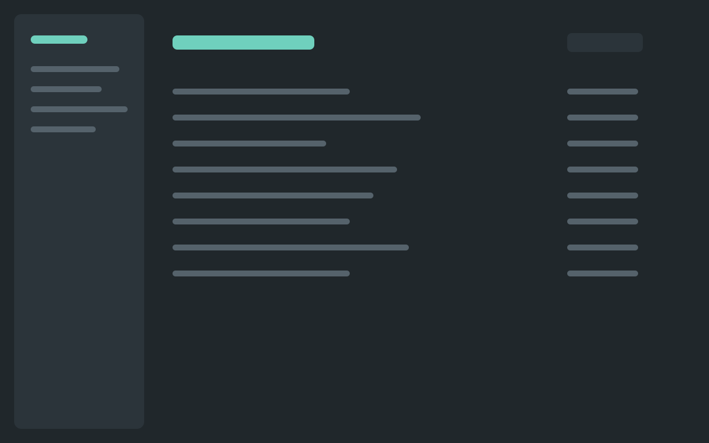
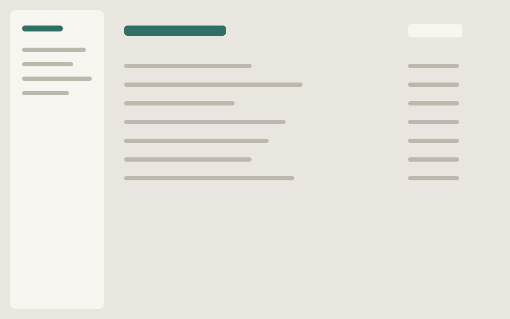
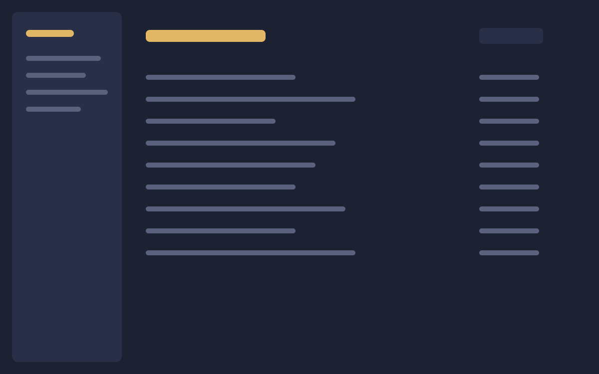

Route board
Dispatchers lost track of vans across three depots. Planning a day fell from 40 minutes to 12.

Dispatchers lost track of vans across three depots. Planning a day fell from 40 minutes to 12.

Two finance systems disagreed by the end of each month. Monthly reconciliation dropped from three days to one.

Publishers could not preview books on small screens. 15 hours of manual checks a week removed.